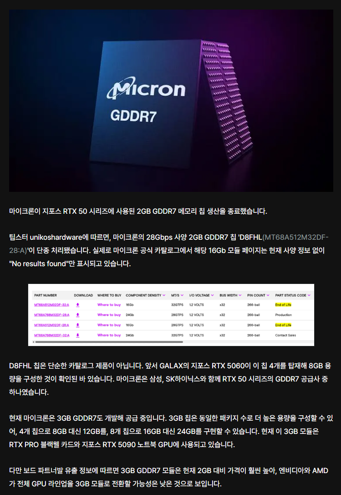

1. 50시리즈 그래픽카드에는 GDDR7 2gb 칩이 들어감. 그런데 마이크론이 해당 칩 단종 및 3gb만 생산하고있음
2. 그러면 삼성전자 랑 SK하이닉스 이렇게 양사만 GDDR7 2기가 칩셋 공급사로 남게되는데, 문제는 하이닉스도 단종예정이라는 찌라시돔
3. 글카 기본설계에 QC된 부품스펙이 고정값임. 한마디로 2기가칩을 3기가칩으로 설계변경이 힘듬
4. 그리고 3기가 칩셋은 대부분 RTX pro 6000 같이 워크스테이션용 고부가가치상품에만 사용중이고 이것도 지금 품귀상태임
5. 그러면 어찌되냐고? 그냥 시장에 엔비디아 50시리즈 카드는 천연기념물이 되는거지뭐
6. 비트코인대란때보다 심각한게 그냥 하위라인업조차도 매물이 증발할 가능성이 높음(그때는 LHR이라고 채굴금지모델이라도있었지)
한줄요약 : 글카대란이 아니라 글카소멸로 지금시장상황 요약을 바꿔야할듯
몇년 지나고 반도체 사이클 끝나면... 만들고 남아서 안팔리는 HBM 칩을 그래픽카드에 박으려나...?